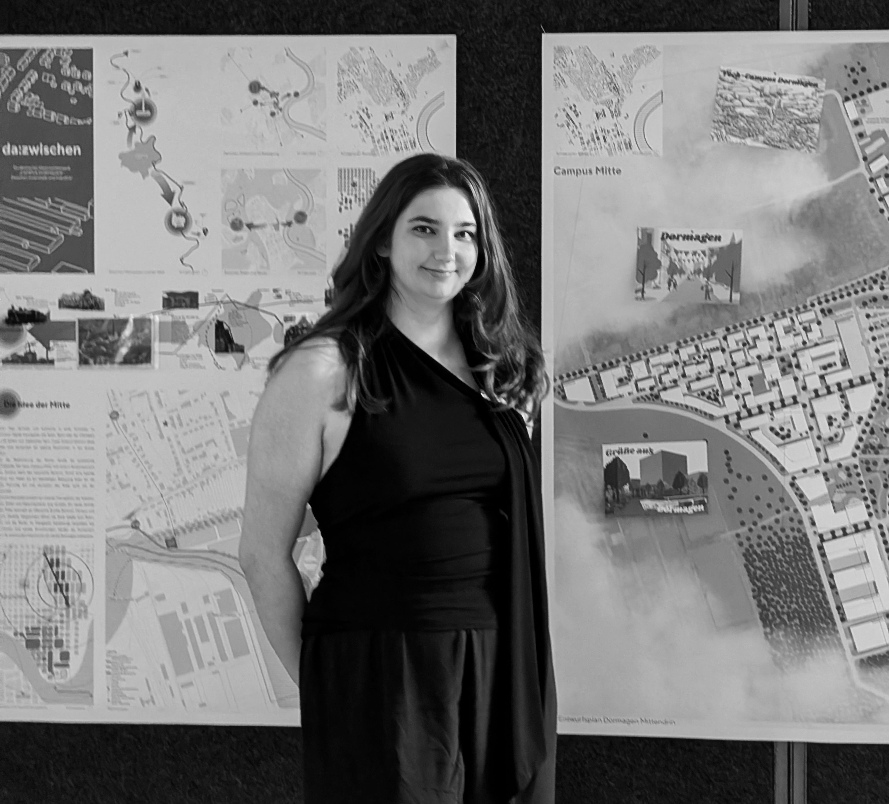

After successfully completing my Bachelor's degree in Architecture at LFU Innsbruck, I am currently deepening my knowledge through a Master's program in Urban Design and Architecture at RWTH Aachen and LFU Innsbruck.
I am fascinated by the interplay between architectural details and the broader urban context. For me, designing spaces means developing sustainable and social identities for the city of tomorrow.
My focus lies at the intersection of precise building design and strategic urban planning. I am particularly interested in sustainable adaptive reuse, the reactivation of urban spaces, and contextual design in alpine regions.
Additionally, I am passionate about physical model making and architectural photography as a means to explore spaces both haptically and visually.
Creativity for me goes far beyond architecture and design. Outside of work, I enjoy painting, baking, and perfecting my role as a cinnamon roll connoisseur and occasional chocolate cake destroyer.
I also find great inspiration in traveling exploring new cultures, different cities, and the unique architecture of unfamiliar places constantly shapes my perspective on design.

I am always open to discussing new projects, creative ideas, or opportunities to be part of your vision. Whether you have a specific inquiry or just want to say hello, feel free to reach out.